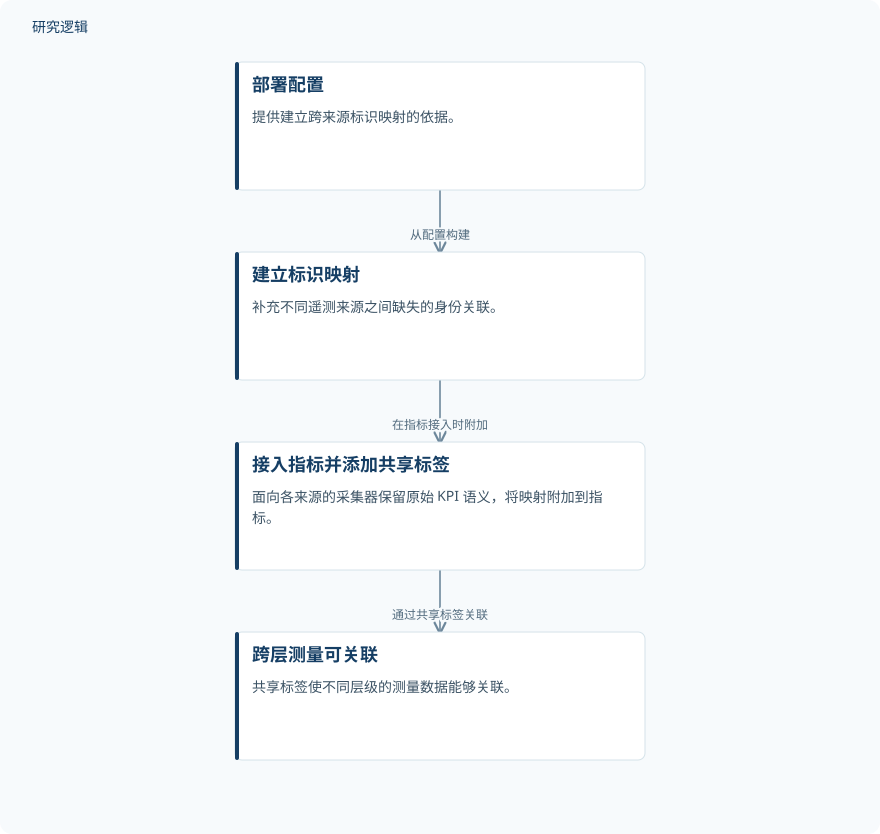

摘要解读
Panoramic：面向开放无线接入网部署的跨层测量平台
Panoramic: A Cross-Layer Measurement Platform for Open RAN Deployments
解读更新 2026-11-03 10:43 · 依据公开摘要整理，未核验全文细节
Open RAN 的运维难点不只是采集指标，更是确认不同层级的指标究竟属于哪个组件、哪套部署。Panoramic 从部署配置建立标识映射，为跨层故障诊断和受约束的智能体操作提供数据关联基础。
文章目录
指标已经采集，身份却尚未对齐
Open RAN 的遥测来自无线接入网、5G 核心网、Kubernetes、服务器、前传交换机和无线单元，但这些来源采用不同的身份体系：无线接入网使用 cell-ID 和 PCI，Kubernetes 使用命名空间与 pod，交换机则使用端口与 VLAN。
摘要指出，现有工具分开采集这些数据，却缺少标识之间的共同映射。因此，要把 DU 事件与主机 CPU 峰值或交换机端口错误联系起来，每次查询都需要人工重建拓扑。即使在单一来源内部，指标携带的标识也未必足以确定所属组件或部署。
在指标接入时补上部署映射
Panoramic 从部署配置中建立缺失的映射，并在指标接入时将其附加到数据上。面向不同来源的采集器保留原始 KPI 语义，同时添加共享标签，使不同层级的测量数据能够关联，而不是要求各来源先改用同一种原生标识。
平台对标识采取区别化启用策略：稳定的部署标识始终启用，RNTI、pod 名称等瞬态运行标识仅在 RAN 运行时启用。摘要将这一安排与日常监控的轻量化联系起来，但未给出具体开销测量。
依据摘要整理的指标关联过程


此图为依据摘要整理的示意图，并非论文原图；仅展示部署配置、标识映射与指标关联之间的关系。
下载 SVG图示关系说明
实线表示相邻阶段的信息流，虚线表示跨阶段联系或反馈。
部署配置 → 建立标识映射：从配置构建；建立标识映射 → 接入指标并添加共享标签：在指标接入时附加；接入指标并添加共享标签 → 跨层测量可关联：通过共享标签关联
摘要报告的是关联能力与受限操作
摘要报告，Panoramic 支持跨层故障诊断，以及面向机器学习应用的数据集导出。这些是平台提供的能力，不能直接理解为已经证明诊断准确率提高，或下游模型性能得到改善。
平台还支持有边界的智能体操作：语言模型智能体诊断故障，并通过受基于角色的访问控制（RBAC）约束的接口执行获准动作。这里的关键限定是操作受授权边界约束，而非不受限制的自主运维。
效果、规模与验证边界仍待确认
仅凭本次摘要，无法判断平台验证涉及的部署规模、样本构成、故障类型、比较基线及测试条件，也无法确认映射准确性、诊断效果、采集开销和智能体操作安全性的验证范围。摘要未报告这些细节，不等于论文没有开展相应评估。
阅读启发：先看数据归属，再看智能诊断
阅读启发：对 AI 智能运维而言，这份摘要提示了一个值得关注的前提——模型使用跨层数据之前，需要先明确数据归属。进一步阅读时，可关注部署变化后映射如何保持一致、瞬态标识如何参与关联，以及 RBAC 如何界定智能体可执行的动作；这些问题不能由当前摘要直接回答。
以上为本站阅读启发与建议，不是论文已验证的结论。